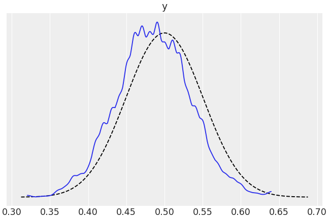
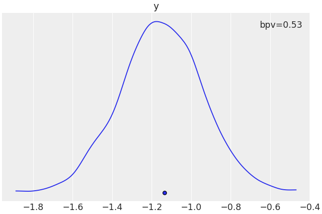

arviz.plot_bpv¶
-
arviz.plot_bpv(data, kind='u_value', t_stat='median', bpv=True, plot_mean=True, reference='analytical', mse=False, n_ref=100, hdi_prob=0.94, color='C0', figsize=None, textsize=None, data_pairs=None, var_names=None, filter_vars=None, coords=None, flatten=None, flatten_pp=None, ax=None, backend=None, plot_ref_kwargs=None, backend_kwargs=None, group='posterior', show=None)[source]¶ Plot Bayesian p-value for observed data and Posterior/Prior predictive.
- Parameters
- dataaz.InferenceData object
InferenceData object containing the observed and posterior/prior predictive data.
- kindstr
Type of plot to display (“p_value”, “u_value”, “t_stat”). Defaults to u_value. For “p_value” we compute p := p(y* ≤ y | y). This is the probability of the data y being larger or equal than the predicted data y*. The ideal value is 0.5 (half the predictions below and half above the data). For “u_value” we compute pi := p(yi* ≤ yi | y). i.e. like a p_value but per observation yi. This is also known as marginal p_value. The ideal distribution is uniform. This is similar to the LOO-pit calculation/plot, the difference is than in LOO-pit plot we compute pi = p(yi* r ≤ yi | y-i ), where y-i, is all other data except yi. For “t_stat” we compute := p(T(y)* ≤ T(y) | y) where T is any T statistic. See t_stat argument below for details of available options.
- t_statstr, float, or callable
T statistics to compute from the observations and predictive distributions. Allowed strings are “mean”, “median” or “std”. Defaults to “median”. Alternative a quantile can be passed as a float (or str) in the interval (0, 1). Finally a user defined function is also acepted, see examples section for details.
- bpvbool
If True (default) add the bayesian p_value to the legend when kind = t_stat.
- plot_meanbool
Whether or not to plot the mean T statistic. Defaults to True.
- referencestr
How to compute the distributions used as reference for u_values or p_values. Allowed values are “analytical” (default) and “samples”. Use None to do not plot any reference. Defaults to “samples”.
- mse :bool
Show scaled mean square error between uniform distribution and marginal p_value distribution. Defaults to False.
- n_refint, optional
Number of reference distributions to sample when reference=samples. Defaults to 100.
- hdi_prob: float, optional
Probability for the highest density interval for the analytical reference distribution when computing u_values. Should be in the interval (0, 1]. Defaults to 0.94.
- colorstr
Matplotlib color
- figsizetuple
Figure size. If None it will be defined automatically.
- textsizefloat
Text size scaling factor for labels, titles and lines. If None it will be autoscaled based on figsize.
- data_pairsdict
Dictionary containing relations between observed data and posterior/prior predictive data. Dictionary structure:
key = data var_name
value = posterior/prior predictive var_name
For example, data_pairs = {‘y’ : ‘y_hat’} If None, it will assume that the observed data and the posterior/prior predictive data have the same variable name.
- var_nameslist of variable names
Variables to be plotted, if None all variable are plotted. Prefix the variables by ~ when you want to exclude them from the plot.
- filter_vars{None, “like”, “regex”}, optional, default=None
If None (default), interpret var_names as the real variables names. If “like”, interpret var_names as substrings of the real variables names. If “regex”, interpret var_names as regular expressions on the real variables names. A la pandas.filter.
- coordsdict
Dictionary mapping dimensions to selected coordinates to be plotted. Dimensions without a mapping specified will include all coordinates for that dimension. Defaults to including all coordinates for all dimensions if None.
- flattenlist
List of dimensions to flatten in observed_data. Only flattens across the coordinates specified in the coords argument. Defaults to flattening all of the dimensions.
- flatten_pplist
List of dimensions to flatten in posterior_predictive/prior_predictive. Only flattens across the coordinates specified in the coords argument. Defaults to flattening all of the dimensions. Dimensions should match flatten excluding dimensions for data_pairs parameters. If flatten is defined and flatten_pp is None, then flatten_pp=flatten.
- legendbool
Add legend to figure. By default True.
- axnumpy array-like of matplotlib axes or bokeh figures, optional
A 2D array of locations into which to plot the densities. If not supplied, Arviz will create its own array of plot areas (and return it).
- backendstr, optional
Select plotting backend {“matplotlib”,”bokeh”}. Default “matplotlib”.
- plot_ref_kwargsdict, optional
Extra keyword arguments to control how reference is represented. Passed to plt.plot or plt.axhspan`(when `kind=u_value and reference=analytical).
- backend_kwargsbool, optional
These are kwargs specific to the backend being used. For additional documentation check the plotting method of the backend.
- group{“prior”, “posterior”}, optional
Specifies which InferenceData group should be plotted. Defaults to ‘posterior’. Other value can be ‘prior’.
- showbool, optional
Call backend show function.
- Returns
- axes: matplotlib axes or bokeh figures
References
Gelman et al. (2013) see http://www.stat.columbia.edu/~gelman/book/ pages 151-153 for details
Examples
Plot Bayesian p_values.
>>> import arviz as az >>> data = az.load_arviz_data("regression1d") >>> az.plot_bpv(data, kind="p_value")
Plot custom t statistic comparison.
>>> import arviz as az >>> data = az.load_arviz_data("regression1d") >>> az.plot_bpv(data, kind="t_stat", t_stat=lambda x:np.percentile(x, q=50, axis=-1))
